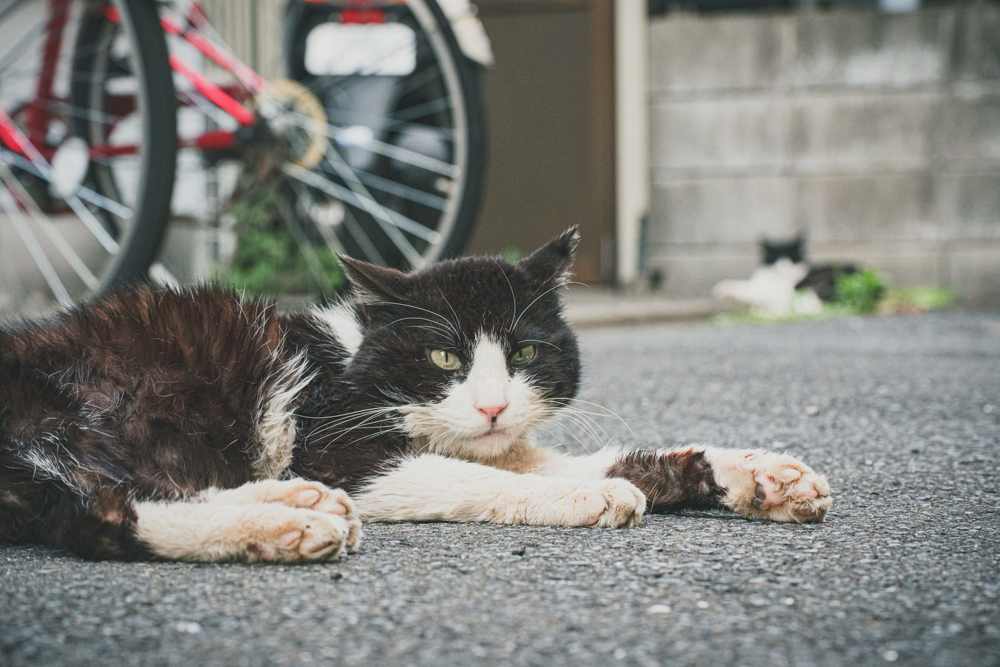

NEWS

12月15日NTV『風のワンコ』
投稿日：2020年11月30日
2020年12月15日(火)
NTV『風のワンコ』15時より
コロナ禍で増えるペット人口について問題提起、改善策に関してとりあげて頂きました。
11月4日 里親説明会開催決定
投稿日：2020年10月05日
里親説明会開催が決定いたしました。
日時：2020年11月4日(水)13時より
場所：NPO法人キャトック
定員：20名程
申込方法：お電話、またはお問い合わせよりお申し込みください。
里親になるまでの流れや、審査方法などをご説明いたします。
また、空ちゃんファミリーにご来場頂き、お話をお伺いします！